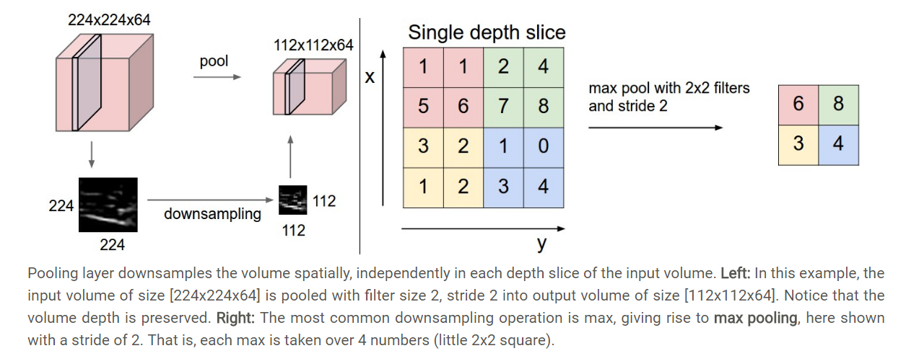

FC and CNN Networks
Contents
FC and CNN Networks¶
A simple CNN net¶
Converlutional Kernel¶
Pooling Layer¶

Minst dataset¶
The MNIST database of handwritten digits, available from this page, has a training set of 60,000 examples, and a test set of 10,000 examples. It is a subset of a larger set available from NIST. The digits have been size-normalized and centered in a fixed-size image.

CIFAR10 dataset and state of the art¶
The CIFAR-10 dataset consists of 60000 32x32 color images in 10 classes, with 6000 images per class. There are 50000 training images and 10000 test images.
FC for MNist¶
import torch
import torch.nn as nn
import torchvision
import torchvision.transforms as transforms
import matplotlib.pyplot as plt
D:\ProgramData\Anaconda3\lib\site-packages\pandas\compat\_optional.py:138: UserWarning: Pandas requires version '2.7.0' or newer of 'numexpr' (version '2.6.9' currently installed).
warnings.warn(msg, UserWarning)
---------------------------------------------------------------------------
ImportError Traceback (most recent call last)
<ipython-input-1-c01407755b02> in <module>
1 import torch
2 import torch.nn as nn
----> 3 import torchvision
4 import torchvision.transforms as transforms
5 import matplotlib.pyplot as plt
D:\ProgramData\Anaconda3\lib\site-packages\torchvision\__init__.py in <module>
----> 1 from torchvision import models
2 from torchvision import datasets
3 from torchvision import ops
4 from torchvision import transforms
5 from torchvision import utils
D:\ProgramData\Anaconda3\lib\site-packages\torchvision\models\__init__.py in <module>
9 from .shufflenetv2 import *
10 from . import segmentation
---> 11 from . import detection
D:\ProgramData\Anaconda3\lib\site-packages\torchvision\models\detection\__init__.py in <module>
----> 1 from .faster_rcnn import *
2 from .mask_rcnn import *
3 from .keypoint_rcnn import *
D:\ProgramData\Anaconda3\lib\site-packages\torchvision\models\detection\faster_rcnn.py in <module>
5 import torch.nn.functional as F
6
----> 7 from torchvision.ops import misc as misc_nn_ops
8 from torchvision.ops import MultiScaleRoIAlign
9
D:\ProgramData\Anaconda3\lib\site-packages\torchvision\ops\__init__.py in <module>
----> 1 from .boxes import nms, box_iou
2 from .roi_align import roi_align, RoIAlign
3 from .roi_pool import roi_pool, RoIPool
4 from .poolers import MultiScaleRoIAlign
5 from .feature_pyramid_network import FeaturePyramidNetwork
D:\ProgramData\Anaconda3\lib\site-packages\torchvision\ops\boxes.py in <module>
1 import torch
----> 2 from torchvision import _C
3
4
5 def nms(boxes, scores, iou_threshold):
ImportError: DLL load failed: 找不到指定的模块。
# Device configuration
device = torch.device('cuda' if torch.cuda.is_available() else 'cpu')
# Hyper-parameters
input_size = 784 # 28x28
hidden_size = 500
num_classes = 10
num_epochs = 2
batch_size = 100
learning_rate = 0.001
# MNIST dataset
train_dataset = torchvision.datasets.MNIST(root='./data',
train=True,
transform=transforms.ToTensor(),
download=True)
test_dataset = torchvision.datasets.MNIST(root='./data',
train=False,
transform=transforms.ToTensor())
# Data loader
train_loader = torch.utils.data.DataLoader(dataset=train_dataset,
batch_size=batch_size,
shuffle=True)
test_loader = torch.utils.data.DataLoader(dataset=test_dataset,
batch_size=batch_size,
shuffle=False)
examples = iter(test_loader)
example_data, example_targets = examples.next()
for i in range(6):
plt.subplot(2,3,i+1)
plt.imshow(example_data[i][0], cmap='gray')
plt.show()
# Fully connected neural network with one hidden layer
class NeuralNet(nn.Module):
def __init__(self, input_size, hidden_size, num_classes):
super(NeuralNet, self).__init__()
self.input_size = input_size
self.l1 = nn.Linear(input_size, hidden_size)
self.relu = nn.ReLU()
self.l2 = nn.Linear(hidden_size, num_classes)
def forward(self, x):
out = self.l1(x)
out = self.relu(out)
out = self.l2(out)
# no activation and no softmax at the end
return out
model = NeuralNet(input_size, hidden_size, num_classes).to(device)
# Loss and optimizer
criterion = nn.CrossEntropyLoss()
optimizer = torch.optim.Adam(model.parameters(), lr=learning_rate)
# Train the model
n_total_steps = len(train_loader)
for epoch in range(num_epochs):
for i, (images, labels) in enumerate(train_loader):
# origin shape: [100, 1, 28, 28]
# resized: [100, 784]
images = images.reshape(-1, 28*28).to(device)
labels = labels.to(device)
# Forward pass
outputs = model(images)
loss = criterion(outputs, labels)
# Backward and optimize
optimizer.zero_grad()
loss.backward()
optimizer.step()
if (i+1) % 100 == 0:
print (f'Epoch [{epoch+1}/{num_epochs}], Step [{i+1}/{n_total_steps}], Loss: {loss.item():.4f}')
# Test the model
# In test phase, we don't need to compute gradients (for memory efficiency)
with torch.no_grad():
n_correct = 0
n_samples = 0
for images, labels in test_loader:
images = images.reshape(-1, 28*28).to(device)
labels = labels.to(device)
outputs = model(images)
# max returns (value ,index)
_, predicted = torch.max(outputs.data, 1)
n_samples += labels.size(0)
n_correct += (predicted == labels).sum().item()
acc = 100.0 * n_correct / n_samples
print(f'Accuracy of the network on the 10000 test images: {acc} %')
CNN for CIFAR 10¶
import torch
import torch.nn as nn
import torch.nn.functional as F
import torchvision
import torchvision.transforms as transforms
import matplotlib.pyplot as plt
import numpy as np
# Device configuration
device = torch.device('cuda' if torch.cuda.is_available() else 'cpu')
# Hyper-parameters
num_epochs = 5
batch_size = 4
learning_rate = 0.001
# dataset has PILImage images of range [0, 1].
# We transform them to Tensors of normalized range [-1, 1]
transform = transforms.Compose(
[transforms.ToTensor(),
transforms.Normalize((0.5, 0.5, 0.5), (0.5, 0.5, 0.5))])
# CIFAR10: 60000 32x32 color images in 10 classes, with 6000 images per class
train_dataset = torchvision.datasets.CIFAR10(root='./data', train=True,
download=True, transform=transform)
test_dataset = torchvision.datasets.CIFAR10(root='./data', train=False,
download=True, transform=transform)
train_loader = torch.utils.data.DataLoader(train_dataset, batch_size=batch_size,
shuffle=True)
test_loader = torch.utils.data.DataLoader(test_dataset, batch_size=batch_size,
shuffle=False)
classes = ('plane', 'car', 'bird', 'cat',
'deer', 'dog', 'frog', 'horse', 'ship', 'truck')
def imshow(img):
img = img / 2 + 0.5 # unnormalize
npimg = img.numpy()
plt.imshow(np.transpose(npimg, (1, 2, 0)))
plt.show()
# get some random training images
dataiter = iter(train_loader)
images, labels = dataiter.next()
# show images
imshow(torchvision.utils.make_grid(images))
class ConvNet(nn.Module):
def __init__(self):
super(ConvNet, self).__init__()
self.conv1 = nn.Conv2d(3, 6, 5)
self.pool = nn.MaxPool2d(2, 2)
self.conv2 = nn.Conv2d(6, 16, 5)
self.fc1 = nn.Linear(16 * 5 * 5, 120)
self.fc2 = nn.Linear(120, 84)
self.fc3 = nn.Linear(84, 10)
def forward(self, x):
# -> n, 3, 32, 32
x = self.pool(F.relu(self.conv1(x))) # -> n, 6, 14, 14
x = self.pool(F.relu(self.conv2(x))) # -> n, 16, 5, 5
x = x.view(-1, 16 * 5 * 5) # -> n, 400
x = F.relu(self.fc1(x)) # -> n, 120
x = F.relu(self.fc2(x)) # -> n, 84
x = self.fc3(x) # -> n, 10
return x
model = ConvNet().to(device)
criterion = nn.CrossEntropyLoss()
optimizer = torch.optim.SGD(model.parameters(), lr=learning_rate)
n_total_steps = len(train_loader)
for epoch in range(num_epochs):
for i, (images, labels) in enumerate(train_loader):
# origin shape: [4, 3, 32, 32] = 4, 3, 1024
# input_layer: 3 input channels, 6 output channels, 5 kernel size
images = images.to(device)
labels = labels.to(device)
# Forward pass
outputs = model(images)
loss = criterion(outputs, labels)
# Backward and optimize
optimizer.zero_grad()
loss.backward()
optimizer.step()
if (i+1) % 2000 == 0:
print (f'Epoch [{epoch+1}/{num_epochs}], Step [{i+1}/{n_total_steps}], Loss: {loss.item():.4f}')
print('Finished Training')
PATH = './cnn.pth'
torch.save(model.state_dict(), PATH)
with torch.no_grad():
n_correct = 0
n_samples = 0
n_class_correct = [0 for i in range(10)]
n_class_samples = [0 for i in range(10)]
for images, labels in test_loader:
images = images.to(device)
labels = labels.to(device)
outputs = model(images)
# max returns (value ,index)
_, predicted = torch.max(outputs, 1)
n_samples += labels.size(0)
n_correct += (predicted == labels).sum().item()
for i in range(batch_size):
label = labels[i]
pred = predicted[i]
if (label == pred):
n_class_correct[label] += 1
n_class_samples[label] += 1
acc = 100.0 * n_correct / n_samples
print(f'Accuracy of the network: {acc} %')
for i in range(10):
acc = 100.0 * n_class_correct[i] / n_class_samples[i]
print(f'Accuracy of {classes[i]}: {acc} %')